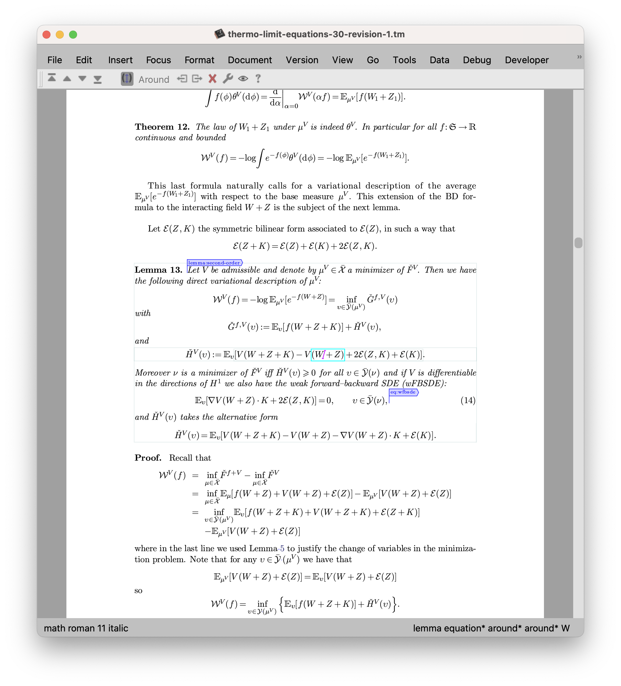
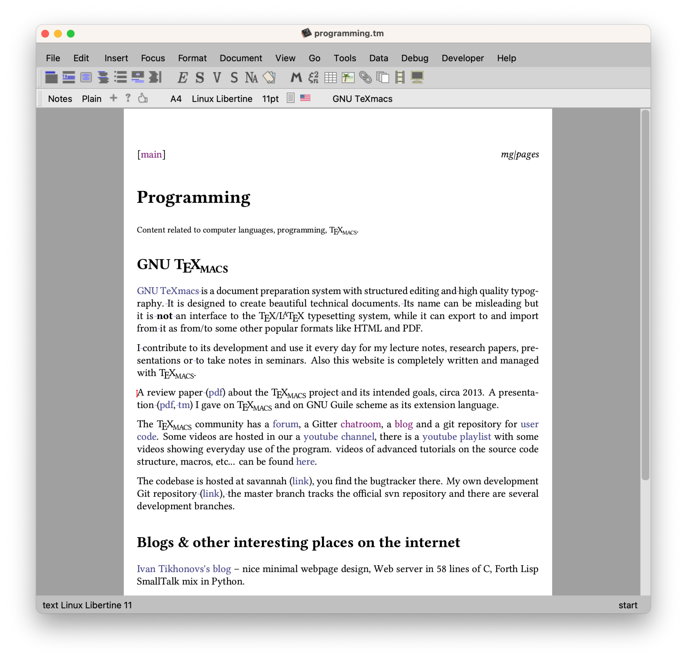

[main]mg|pages
GNU TeXmacs is a document preparation system with structured editing and high quality typography. It is designed to create beautiful technical documents. Its name can be misleading but it is not an interface to the TeX/LaTeX typesetting system, while it can export to and import from it as from/to some other popular formats like HTML and PDF.


I contribute to its development and use it every day for my lecture notes, research papers, presentations or to take notes in seminars. Also this website is completely written and managed with TeXmacs.
A review paper (pdf) about the TeXmacs project and its intended goals, circa 2013. A presentation (pdf, tm) I gave on TeXmacs and on GNU Guile scheme as its extension language.
The TeXmacs community has a forum, a Gitter chatroom, a blog and a git repository for user code. Some videos are hosted in our a youtube channel, there is a youtube playlist with some videos showing everyday use of the program. videos of advanced tutorials on the source code structure, macros, etc… can be found here.
The codebase is hosted at savannah (link), you find the bugtracker there. My own development Git repository (link), the svn_sync branch tracks the official SVN repository and there are several development branches.
One of these experiments is TeXmacs Vue, a WebAssembly port of TeXmacs which runs directly in the browser. You can try the web application without installing the program.
TeXmacs Vue and the WebAssembly port (wip_wasm_vue):
the new Vue interface and a browser build of TeXmacs.
Vau: an experiment in extracting a minimal TeXmacs typesetting core for reading and rendering TeXmacs documents, while exploring possible refactorings.
Alternative graphical interfaces (wip_other_guis):
ongoing work on the native Cocoa interface for macOS and on the SDL
and Vue interfaces.
New icons (wip_icons): a redesigned
icon set for the application.
OpenType support (wip_opentype):
support for OpenType text and mathematical fonts.
s7 Scheme support (wip_s7): integration
of the s7 Scheme interpreter as an alternative Scheme
runtime.
Experimental macOS DMG: a universal Cocoa build for
Apple silicon and Intel, generated by the CI workflow on the ns_ci branch. The DMG can be downloaded from the latest
successful run.
Clay: a small, renderer-independent C library for responsive UI layout, with WebAssembly support.
s7-imgui: an experiment in integrating the s7 Scheme interpreter with an immediate-mode graphical interface.
The Machinery UI articles: practical notes on immediate-mode GUI architecture, drag and drop, event dispatch, rendering and Emscripten.
Text layout is a loose hierarchy of segmentation and Raph Levien's blog: thoughtful material on text layout, fonts and graphics.
Blend2D and Sokol: compact building blocks for two-dimensional rendering and cross-platform graphics.
Decker: a modern, scriptable environment inspired by HyperCard, and an example of documents used as interfaces.
rxi's blog contains very interesting minimal design ideas for user interfaces, including the lite editor; rxi also developed the tiny microui immediate-mode UI library.
msdf-atlas-gen: a generator for GPU-friendly multi-channel signed-distance-field font atlases.
Lisp in Small Pieces on modern Schemes: source programs from Christian Queinnec's book, updated for modern versions of Bigloo, MIT Scheme and Guile.
femtolisp: a compact, fast and self-contained Scheme-like Lisp with a small core, bytecode compiler and virtual machine.
META II: a Scheme implementation of the META II compiler-writing language, together with an assembler and bytecode interpreter.
s7 Scheme: a small embeddable Scheme interpreter designed for extending and scripting larger programs.
Maru: Ian Piumarta's experimental Lisp implementation, including parsing-expression grammar and compiler experiments.
Ivan Tikhonov's blog: notes on minimal software and web design, including tiny C programs and experiments mixing Forth, Lisp, Smalltalk and Python.
Felix Breuer's blog: essays and projects at the intersection of mathematics, computation and visual explanation.
Ian Piumarta's software projects: a collection of small language implementations, virtual machines and experiments in extensible systems.
Matthew Butterick's Practical Typography: a clear reference on type composition, fonts and page layout, including typography for the web.
Nicolas P. Rougier's website: research and teaching resources on scientific computing, visualization and reproducible research.
Build Your Own Lisp: a step-by-step introduction to C, parsing and interpreters through the construction of a small Lisp.
Daniel Holden's website: technical articles on numerical methods, graphics, animation, machine learning and game development.
Peter Norvig's website: essays, notebooks and code on artificial intelligence, algorithms, programming languages and software design.